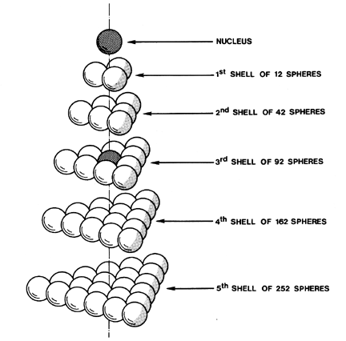

Fig. 419.30 Realized Nucleus Appears at Fifth Shell Layer: In concentric closest packing of successive shell layers potential nuclei appear at the third shell layer, but they are not realized until surrounded by two shells at the fifth layer.
Copyright © 1997 Estate of R. Buckminster Fuller